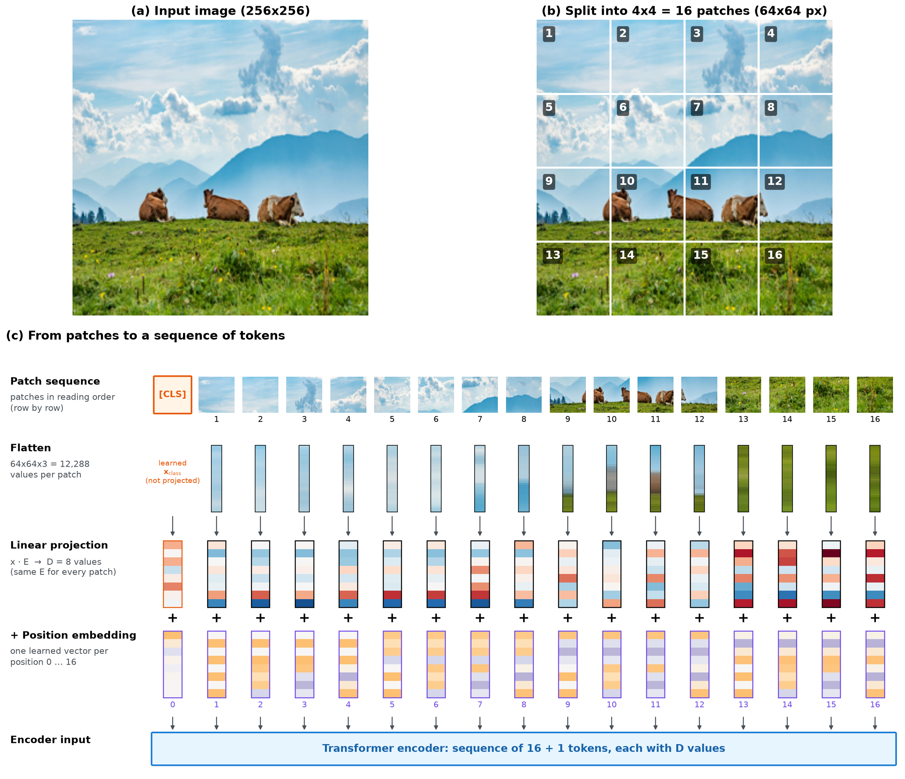
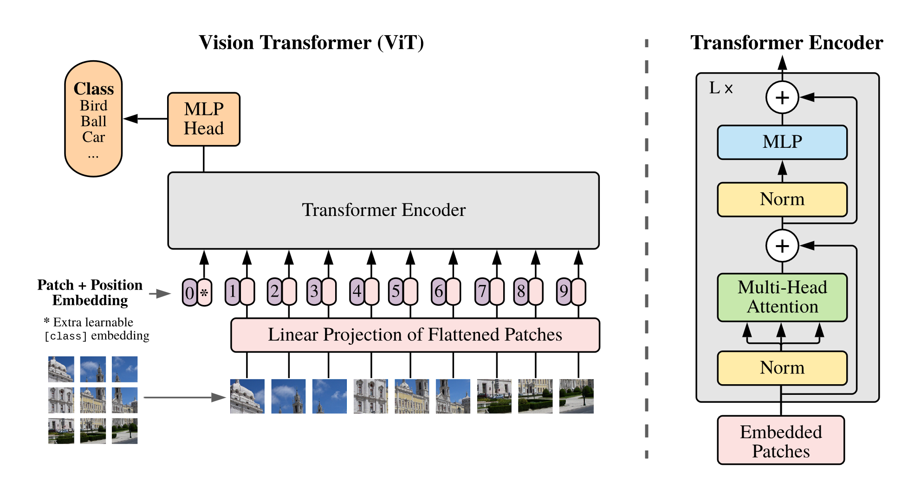
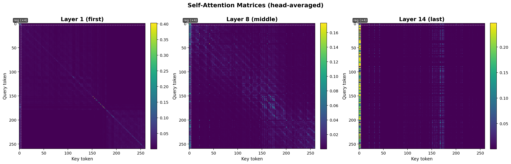
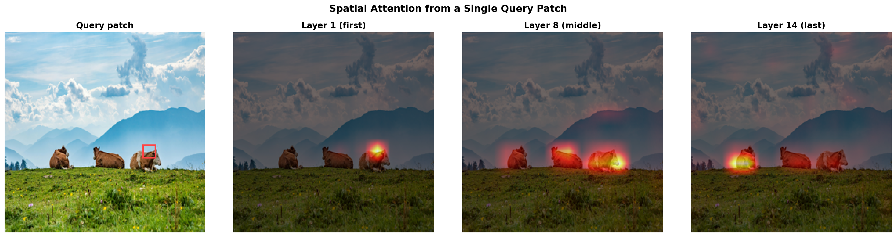
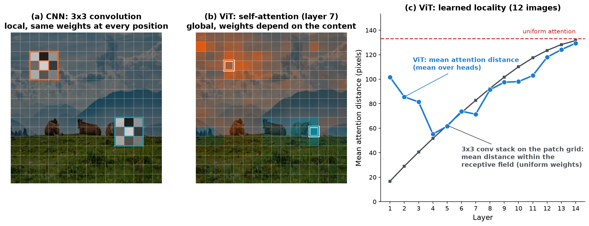

import timm
# Load a pretrained CNN
cnn_model = timm.create_model('resnet50', pretrained=True)
# Load a pretrained ViT
vit_model = timm.create_model('vit_base_patch16_224', pretrained=True)7 - Modern Vision Backbones
TipLearning Objectives
After this lecture you should be able to:
- Explain how the transformer architecture is adapted for image data through patch embeddings.
- Describe the role of positional embeddings and the [CLS] token in a Vision Transformer.
- Distinguish between CNNs and Vision Transformers in terms of inductive biases, receptive fields, and data efficiency.
- Justify architecture selection (CNN, ViT, or hybrid) based on dataset size, compute budget, and task requirements.
- Describe on a high-level how hybrid architectures combine convolutional and transformer layers.
TipTLDR Recap
From Sequences to Patches:
- Images are split into fixed-size patches (e.g., 16×16 pixels)
- Each patch is flattened and linearly projected into an embedding vector
- Learned positional embeddings encode spatial position
- A [CLS] token is prepended for classification (same idea as in BERT)
- The resulting sequence is processed by a standard transformer encoder
Self-Attention on Patches:
- Every patch attends to every other patch — global receptive field from layer 1
- No built-in locality bias: spatial relationships must be learned from data
- Consequence: ViTs require large-scale pretraining to match CNNs
CNNs vs Vision Transformers:
| Aspect | CNNs | ViTs |
|---|---|---|
| Inductive biases | Strong (locality, translation equivariance) | Minimal (learned from data) |
| Receptive field | Local → global (hierarchical) | Global from layer 1 |
| Data efficiency | Good with small datasets | Requires large-scale pretraining |
| Scalability | Limited by architecture | Scales well with data and compute |
| Compute | Efficient | Quadratic in number of patches |
Practical Selection:
- Limited data / limited compute → pretrained CNN (ResNet, EfficientNet)
- Large data / large compute → ViT or hybrid
- Edge deployment / inference speed → CNN or efficient hybrid
- When pretrained on massive data, both architectures perform similarly
Current State:
- No clear winner: both CNNs and ViTs are actively used
- Hybrid architectures (FastViT, ConvNeXt) combine strengths of both
- The pretraining data and adaptation strategy often matter more than the backbone architecture itself
1 Motivation
Transformers have become the dominant architecture in natural language processing. Their ability to model long-range dependencies through self-attention and to scale effectively with data and compute has made them remarkably successful for language tasks. A natural question arises: can the same architecture work for images?
This is not obvious. As discussed in the CNNs lecture, convolutional neural networks encode strong prior knowledge about images — local connectivity, parameter sharing, and translation equivariance. These inductive biases make CNNs efficient learners on visual data, especially with limited training data. Transformers, by contrast, make very few assumptions about the structure of their input. They treat data as a generic sequence.
In 2020, Dosovitskiy et al. (2020) demonstrated that a standard transformer, applied directly to sequences of image patches, can achieve competitive performance with state-of-the-art CNNs — provided it is pretrained on sufficiently large datasets. This result, known as the Vision Transformer (ViT), opened a new direction in computer vision architecture design.
The question since then has been: when should one use CNNs, when ViTs, and when a combination of both?
2 From Sequences to Patches
Transformers process sequences of token embeddings. Images, however, are 2-D grids of pixels — not sequences. The key insight of the Vision Transformer is a simple but effective trick: treat an image as a sequence of patches.
2.1 Patch Embedding
The process works as follows:
- Divide the image into a grid of non-overlapping patches. For a 224×224 image with patch size 16×16, this produces \(\frac{224}{16} \times \frac{224}{16} = 196\) patches.
- Flatten each patch into a 1-D vector. A 16×16 RGB patch becomes a vector of length \(16 \times 16 \times 3 = 768\).
- Project each flattened patch through a learnable linear layer to produce a patch embedding of dimension \(D\) (typically 768).
- Add positional embeddings — learned vectors that encode the spatial position of each patch in the grid.
- Prepend a [CLS] token — a special learnable embedding whose output after the transformer serves as the image-level representation for classification (the same concept as in BERT).
The result is a sequence of \(N + 1\) embeddings (196 patches + 1 [CLS] token), each of dimension \(D\). This sequence can be processed by a standard transformer encoder — the same architecture used in language models.
Figure 1 illustrates these steps, and Figure 2 illustrates the architecture.


🤔 Think About It
A ViT processes a 224×224 image with patch size 16×16, resulting in 196 patches. What happens if the patch size is changed to 32×32?
Key considerations
With 32×32 patches, the image is divided into \(\frac{224}{32} \times \frac{224}{32} = 49\) patches — four times fewer than with 16×16 patches.
Consequences:
- Faster: The self-attention computation is quadratic in sequence length, so 49 patches are much cheaper than 196.
- Less detail: Each patch covers a larger area, so fine-grained spatial information within a patch is lost during projection.
- Trade-off: Larger patches reduce compute cost but may hurt performance on tasks that require fine spatial resolution.
This is analogous to the resolution trade-off in CNNs — coarser input means faster processing but less detail.
NoteQuiz: Patch Embedding as a Convolution?
Question: Splitting an image into 16×16 patches, flattening them, and projecting each patch with the same linear layer \(\mathbf{E}\) to \(D = 768\) values — can these steps be implemented with a single convolutional layer?
- No — convolutions use overlapping windows, while patches do not overlap.
- Yes — with a kernel size of 16×16, a stride of 16, and 768 output channels.
- Only approximately — a convolution shares its weights across positions, the linear projection does not.
Click for result
Correct answer: 2 — a convolution with kernel size and stride equal to the patch size.
With a stride equal to the kernel size, the windows do not overlap: each window covers exactly one patch. Each of the 768 filters has \(16 \times 16 \times 3\) weights, so its output at one position is the dot product of one filter with the flattened patch — exactly one entry of the linear projection. All filters together correspond to the projection matrix \(\mathbf{E}\), and like \(\mathbf{E}\), they are shared across all patches. Both variants have the same number of parameters: \(768 \cdot (16 \cdot 16 \cdot 3) + 768 = 590{,}592\) (weights and biases).
The convolution outputs a 768×14×14 activation map for a 224×224 image, which is flattened into a sequence of 196 embeddings. This is how ViTs are typically implemented in practice, for example in timm:
patch_embed = nn.Conv2d(in_channels=3, out_channels=768, kernel_size=16, stride=16)
x = patch_embed(images) # (B, 768, 14, 14)
x = x.flatten(2).transpose(1, 2) # (B, 196, 768)2.2 Why Positional Embeddings Matter
Unlike CNNs, transformers do not hard-code spatial structure through local connectivity. If patch embeddings were processed without positional information, the model would largely treat them as an unordered set of tokens rather than as elements of a 2-D image grid. ViTs therefore need positional information to be added explicitly, for example through positional embeddings. The original ViT paper further shows that learned positional embeddings acquire a clear 2-D organization during training: nearby patches tend to have similar embeddings, and row–column structure emerges from the data (Dosovitskiy et al. (2020)).
3 Self-Attention on Image Patches
With the image converted into a sequence of patch embeddings, the transformer processes it using the same self-attention mechanism familiar from language models. Each patch embedding attends to every other patch embedding, computing attention weights that determine how much information flows between patches.
The critical difference to CNNs lies in the receptive field. In a CNN, the receptive field starts small (the kernel size) and grows gradually through stacking layers — as discussed in the receptive field section of the CNNs lecture. In a ViT, every patch can attend to every other patch from the very first layer. The receptive field is global from the start.
This global connectivity is both a strength and a weakness:
- Strength: The model can capture long-range dependencies between distant image regions without needing deep stacking. A patch showing a wheel can directly attend to a patch showing a road, regardless of their spatial distance.
- Weakness: The model has no prior knowledge that nearby patches are more likely to be related. It must learn spatial locality entirely from data — which requires substantially more training examples.
NoteQuiz: Receptive Fields
Question: A CNN with three 3×3 convolutional layers (stride 1) has a receptive field of 7×7 at the output. A ViT with the same depth has a receptive field that covers…?
- 7×7 pixels
- The entire patch
- The entire image
Click for result
Correct answer: 3 — The entire image.
In a ViT, self-attention allows every patch to attend to every other patch from the very first layer. After even a single transformer layer, each output embedding has already aggregated information from all patches. The receptive field is therefore the entire image, regardless of depth.
This is in stark contrast to CNNs, where the receptive field grows gradually: \(r_0 = \sum_{l=1}^L \left( (k_l - 1) \prod_{i=1}^{l-1} s_i \right) + 1\).
Figure 3 illustrates what the attention mechanism learns in practice. Notably, the model learns to focus on semantically relevant regions — attending to the object of interest even from early layers.


Figure 3 shows a single query patch. With the following demo, any patch can be selected as query, and the attention can be compared across layers and individual heads.
Tip🎮 Interactive Demo: ViT Attention Explorer
The attention weights were precomputed with a pretrained ViT (14 layers, 5 heads, 4 register tokens). Things to try: select a patch on a cow and on the sky and compare, step through the layers, and compare the individual heads of the same layer. Open the demo in a new tab or view the source code.
4 CNNs vs Vision Transformers
With an understanding of both architectures, we can now compare them systematically. The following table summarizes the key differences:
| Aspect | CNNs | Vision Transformers |
|---|---|---|
| Inductive biases | Strong: locality, translation equivariance, hierarchical | Minimal: learned from data |
| Receptive field | Local → global through depth | Global from layer 1 |
| Data efficiency | Effective with small-to-medium datasets | Requires large-scale pretraining (10M+ images) |
| Scalability | Performance plateaus with more data | Continues to improve with more data and compute |
| Compute cost | Efficient (linear in spatial size) | Expensive (quadratic in number of patches) |
4.1 Inductive Biases: Help or Hindrance?
As discussed in the CNNs lecture, inductive biases are assumptions baked into the architecture. CNNs assume that nearby pixels are related (locality) and that the same pattern can appear anywhere in the image (translation equivariance). These assumptions are generally correct for natural images and make CNNs efficient learners.
ViTs make almost no such assumptions. The self-attention mechanism treats all patches equally — their relationships must be learned entirely from data. This means that ViTs are more flexible but need substantially more data to reach the same performance level.
With small datasets, CNNs outperform ViTs because their inductive biases provide useful structural priors. With very large datasets, ViTs catch up and eventually surpass CNNs, as the learned representations are not constrained by the architectural biases Dosovitskiy et al. (2020).
Figure 4 illustrates the difference. A convolution connects each output to a local neighborhood only and applies the same kernel at every position. Self-attention connects a patch to all patches, and the weights depend on the image content: a patch in the sky attends to other sky patches, a patch on a cow attends to the other cows. Interestingly, a trained ViT learns some locality from data. Already in the first layer, the attention spans a large part of the image — far beyond the receptive field of a convolution. In the following layers, the attention becomes more local, in some layers comparable to a stack of convolutions on the same patch grid, before it becomes more and more global with increasing depth. The average hides differences between heads: Dosovitskiy et al. (2020) report that in early layers, some heads attend very locally while others already attend across the whole image.

🤔 Think About It
Generally: inductive biases are beneficial because they do not need to be learned from data. However, inductive biases also restrict a model’s flexibility since such biases might not always be perfectly aligned with the true data distribution. Can you think of a scenario where the locality assumption of CNNs might be a disadvantage?
Key considerations
Scenarios where locality is limiting:
- Global context tasks: Classifying a scene (e.g., “kitchen” vs “office”) requires understanding the spatial arrangement of objects across the entire image, not just local patterns.
- Long-range dependencies: Detecting that a person is holding a leash connected to a dog requires relating distant image regions.
- Non-local textures: Some textures and patterns are defined by relationships between non-adjacent regions.
In these cases, a ViT’s ability to attend globally from the first layer can be an advantage — though the same effect can be achieved in CNNs by stacking many layers to grow the receptive field.
5 Practical Architecture Selection
For practitioners, the choice between CNNs and ViTs is often more pragmatic than theoretical. The following guidelines summarize the current consensus:
- Limited data, limited compute: Use a pretrained CNN (ResNet, EfficientNet). The inductive biases help generalize with fewer examples, and inference is fast.
- Large data, large compute: ViTs or hybrid architectures can provide marginal gains, especially with self-supervised pretraining.
- Global context needed early: Tasks that require reasoning about the entire image (scene understanding, long-range spatial relationships) may benefit from a ViT.
- Edge deployment, inference speed: CNNs are generally more efficient and easier to deploy on mobile or embedded devices.
5.1 Hybrid Architectures
The boundary between CNNs and ViTs has been blurring. Hybrid architectures combine convolutional layers — typically in the early stages for local feature extraction — with transformer layers in the deeper stages for global reasoning. Examples include FastViT Vasu et al. (2023) and EfficientViT.
Conversely, modern CNN designs have borrowed ideas from transformers. ConvNeXt, for example, modernizes the standard ResNet design with larger kernels, fewer normalization layers, and training techniques inspired by ViTs — achieving competitive performance while retaining the efficiency of convolutions.
5.2 In Practice
Both architectures are readily available through libraries such as timm, which provides hundreds of pretrained models.
Research comparing the two architecture families has found no conclusive winner when both are pretrained on massive datasets Smith et al. (2023). The choice of pretraining data and adaptation strategy often matters more than the backbone architecture itself — an interesting discussion of practical considerations can be found in Werff (2024). Hybrid architectures increasingly combine the strengths of both: convolutional layers for efficient local feature extraction and transformer layers for global reasoning. The question of which architecture family will prevail remains open; it remains to be seen where this research leads.
NoteBeyond Classification: Multimodal ViTs
The same ViT backbone that powers image classification underpins modern multimodal models. BLIP-2 (Li et al. (2023)) connects a frozen ViT image encoder to a large language model via a lightweight Q-Former, enabling visual question answering (VQA) — answering natural language questions about images. Flamingo (Alayrac et al. (2022)) extends this pattern to few-shot multimodal learning across interleaved image-text sequences. These models illustrate that the patch-embedding approach generalises far beyond classification, becoming a universal interface between visual and language representations.
6 References
Alayrac, Jean-Baptiste, Jeff Donahue, Pauline Luc, et al. 2022. Flamingo: A Visual Language Model for Few-Shot Learning. arXiv. http://arxiv.org/abs/2204.14198.
Dosovitskiy, Alexey, Lucas Beyer, Alexander Kolesnikov, et al. 2020. “An Image Is Worth 16x16 Words: Transformers for Image Recognition at Scale.” arXiv:2010.11929 [Cs], October. http://arxiv.org/abs/2010.11929.
Li, Junnan, Dongxu Li, Silvio Savarese, and Steven Hoi. 2023. BLIP-2: Bootstrapping Language-Image Pre-Training with Frozen Image Encoders and Large Language Models. arXiv. http://arxiv.org/abs/2301.12597.
Smith, Samuel L., Andrew Brock, Leonard Berrada, and Soham De. 2023. ConvNets Match Vision Transformers at Scale. arXiv. http://arxiv.org/abs/2310.16764.
Vasu, Pavan Kumar Anasosalu, James Gabriel, Jeff Zhu, Oncel Tuzel, and Anurag Ranjan. 2023. FastViT: A Fast Hybrid Vision Transformer Using Structural Reparameterization. arXiv. https://doi.org/10.48550/arXiv.2303.14189.
Werff, Tobias van der. 2024. CNN Vs. Vision Transformer: A Practitioner’s Guide to Selecting the Right Model. https://tobiasvanderwerff.github.io/2024/05/15/cnn-vs-vit.html.